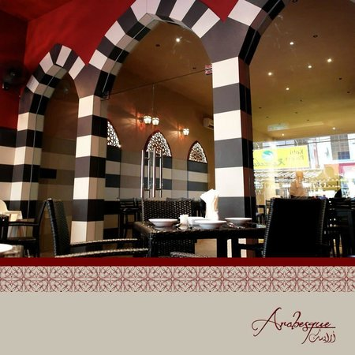

| KLCC Park | Jalan Alor | Sky Bar |
|---|---|---|
 |
 |
 |
| Get tickets for the iconic Petronas Towers, or view them and the surrounding skyscrapers from the lush KLCC park below. You can go there at 10am. Plan to stay: 1-2 hours. | As lunchtime approaches, visit Jalan Alor in Bukit Bintang for a tantalising fill of Asian delicacies and street food. You can go there at 12am. Plan to stay: 2hours. | Book ahead or arrive early for a seat with the best views. Sunset is a good time to have a drink here. You can go there at 3pm. Plan to stay: 1-2 hours. |
| National Mosque | Dewan Filharmonik Petronas | Arabesque |
|---|---|---|
 |
 |
 |
| Robes are provided at the entrance to cover up, if you're under-dressed. You can go there at 12 am. Plan to stay: Less than 1hour. | Reasonably formal dress is required but gentlemen can borrow a jacket at the entrance for free if needed. You can go there at 2am. Plan to stay: 2-3 hours. | Find delicious Lebanese and Syrian dishes at Arabesque — a great-value restaurant in the Chinatown area. You can go there at 6pm. Plan to stay: More than 2 hours. |
| Batu Caves | Central Market KL | Little India Briekfields |
|---|---|---|
 |
 |
 |
| On your third day in Kuala Lumpur, visit Batu Caves so that you can admire the colourful Indian temples and architecture. You can go there at 8am. Plan to stay: 1-2 hours. | You can find plenty of handicraft and souvenir stalls boutiques selling authentic Malaysian batik prints and local artwork. You can go there at 2pm. Plan to stay: 3hours. | If you have a few days, you can have a gorgeous Indian sari tailor-made at one of the workshops. You can go there at 7pm. Plan to stay: 1-2hours. |
| Price List | |
|---|---|
| Numbers of people | Usual Price |
| Single | $1120 |
| Dual | $2200 |
| Triple | $3300 |
| Four and above | $1100 for each |